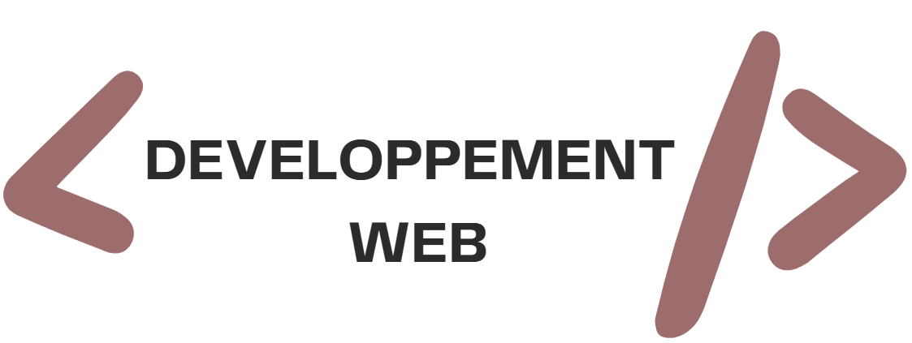
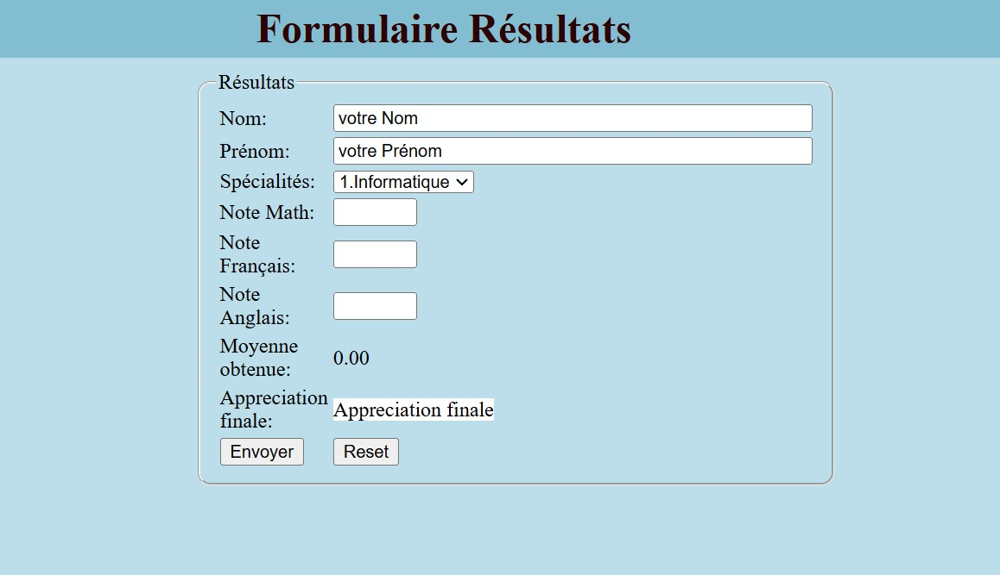
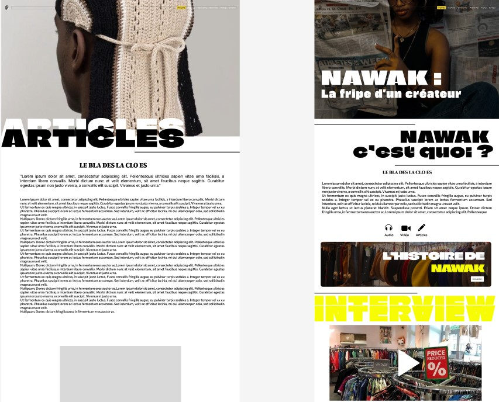

En tant qu'étudiante dans le développement web, j'explore avec enthousiasme ce domaine passionnant. Mon objectif est de créer des sites web interactifs et fonctionnels, tout en apprenant constamment à améliorer mes compétences en programmation. j'en découvre d'avantage avec tout les projet que jeffectue au cours de ma formation, voici quuelque projet que j'ai effectué.
Cliquez pour en savoir plus.
Cliquez pour en savoir plus.


×